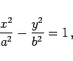
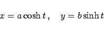
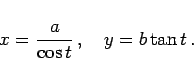

Inhalt Index DeskTop Bronstein

 Geometrie Vektoralgebra und analytische Geometrie Analytische Geometrie der Ebene Hyperbel
Geometrie Vektoralgebra und analytische Geometrie Analytische Geometrie der Ebene Hyperbel


Die Hyperbelgleichung lautet in der Normalform, d.h. für zusammenfallende x- und reelle Achse sowie in der Parameterform
|  | (3.352a) |
|  | (3.352b) |
oder
|  | (3.352c) |
Die Gleichung der Hyperbel in Polarkoordinaten ist unter Polargleichung der Kurven 2. Ordnung zu finden.